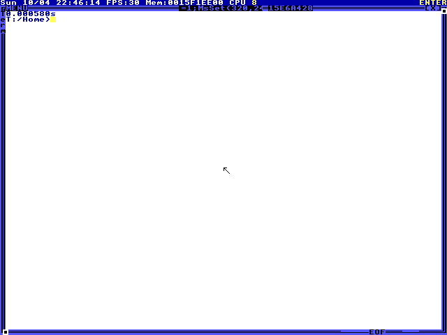

Research environment / 001
Start with the basics.
Six small tasks in TempleOS, operated through Cua’s agent SDK.
A simple starting point for computer-use experiments: run HolyC, move through the filesystem, and read back a file. Each task starts from the same VM state and keeps a record of what the agent saw and did.
Starter tasks
01–06Select a task to read its prompt and inspect the recorded run.
| Task | Uses | Visual check | Turns | View task |
|---|
Task 01
Arithmetic
Evaluate an integer expression in the HolyC shell.
Prompt
Observed result

Actions at this step
Initial observation.
Latest run
Results JSON →These are starter checks based on visible text. They verify the requested output appears, but do not establish every implementation requirement or hidden filesystem state. One attempt per task is a smoke test; more repetitions are needed to estimate model performance.
Download screenshots and trajectories →The environment
TempleOS is a small operating system whose shell runs HolyC. All guest code runs at ring 0. For these starter tasks, the agent uses the ordinary shell and filesystem.
The VM runs locally in QEMU with no guest network. Cua’s agent SDK receives screenshots and calls a custom computer adapter for keyboard and mouse input. Reset, time limits, and grading remain outside the agent.
Cua source →Run a task
pip install -e '.[cua]'
temple-cua fetch-iso
temple-cua prepare --output assets/baseline.qcow2
temple-cua run --provider cua \
--model openai/gpt-6.1-sol \
--baseline assets/baseline.qcow2 \
--task arithmetic --output runs/arithmeticRequires Python 3.11+, QEMU, and your own provider credential. The download includes setup instructions. This website plays recorded runs; it does not expose a live VM or collect API keys.
Download starter harness →